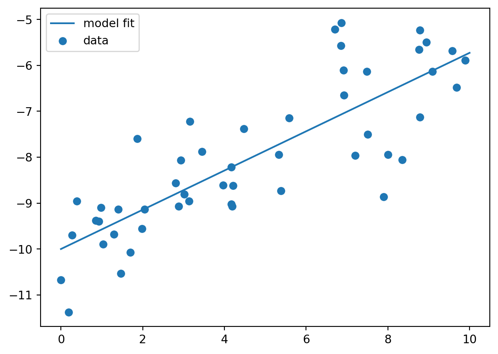

# Necessary imports
import numpy as np #package for work with arrays and matrices
import matplotlib.pyplot as plt #package with plotting capabilities
from scipy import stats
import pandas as pd8 Linear regression in Python
8.1 Linear regression on 2-variable data sets
Linear regression is a supervised learning method for predicting the value of a response variable (Y) based on a linear model of the explanatory variable (X). The following scripts illustrate it using a function from the sklearn package (code adopted from https://jakevdp.github.io/PythonDataScienceHandbook/05.06-linear-regression.html)
Let us generate a data set with y a linear function of x with known slope and intercept, plus added random noise:
m = 0.4 # slope
b = -10 # intercept
rng = np.random.RandomState(1)
x = 10 * rng.rand(50)
y = m * x + b + rng.randn(50)
plt.scatter(x, y)
plt.show()Ue the LinearRegression function to see whether it returns the correct slope and intercept and how well the line fits the data:
slope, intercept, r, p_value, std_err = stats.linregress(x,y)
print("Model slope: ", slope)
print("Model intercept:", intercept)
print("R^2: ", r**2)
xfit = np.linspace(0, 10, 1000)
yfit = xfit*slope + intercept
plt.scatter(x, y, label = 'data')
plt.plot(xfit, yfit, label = 'model fit')
plt.legend()
plt.show()Model slope: 0.4272088103606956
Model intercept: -9.998577085553208
R^2: 0.6751620299329717
8.1.1 Example of baby mass data set
Load the data set newborn_mass.csv which contains two variables: days (in days after birth) and mass (in grams) using the numpy function loadtxt: https://docs.scipy.org/doc/numpy-1.15.0/reference/generated/numpy.loadtxt.html Note that you’ll need to skip the first row and specify comma as the delimiter.
Use your linear regression function to find the best-fit line between the explanatory variable of time (days) and response variable of mass. Make a scatterplot with the regression line overlayed. Based on the determination coefficient, what fraction of the variance in the response variable is explained by the linear fit?
baby = pd.read_csv("data/newborn_mass.csv")
print(baby.head())
days = baby.days
mass = baby.grams
slope, intercept, r, p_value, std_err = stats.linregress(days, mass)
print("Model slope: ", slope)
print("Model intercept:", intercept)
print("R^2: ", r**2)
plt.scatter(days, mass, label = 'data')
new_mass = slope*days+intercept
plt.plot(days, new_mass, label = ' linear fit')
plt.xlabel('time (days)')
plt.ylabel('mass (g)')
plt.legend()
plt.show() days grams
0 27 3021.150
1 49 3148.500
2 59 3241.675
3 70 3702.750
4 80 4042.350
Model slope: 20.43433410132227
Model intercept: 2745.1200914550172
R^2: 0.9367352637458148